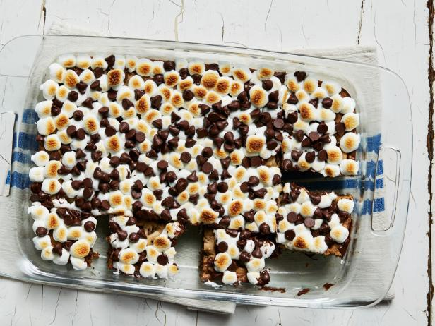

BOLOS E TORTAS | CARNES | AVES | PEIXES | SALADAS | SOPAS
RECEITA FEDERAL - DOCES - DECLARAÇÃO DELICIOSA DE DEDUÇÃO DE CHOCOLATE
Declaração Deliciosa de
Dedução de Chocolate

Ingredientes
- 200g de criatividade tributária
- 150g de humor tributário (pode ser encontrado em lojas de bom humor)
- 250g de chocolate amargo (representando a seriedade fiscal)
- 100g de chantilly (para suavizar os procedimentos)
- 50g de bolachas trituradas (simbolizando a complexidade)
- Pitada de diversão
- Toque de ironia
Modo de Preparo
-
Preparando a Base de Ironia:
-
Em um recipiente grande, misture a criatividade tributária com a pitada de diversão até obter
uma mistura uniforme.
-
Adicione o humor tributário aos poucos, mexendo bem para que a mistura não fique pesada.
-
Derretendo a Seriedade Fiscal:
-
Coloque o chocolate amargo em um banho-maria e derreta-o lentamente. Isso representa o rigor da
Receita Federal.
-
Incorporando a Suavidade:
-
Adicione o chantilly ao chocolate derretido, mexendo delicadamente para criar uma textura suave
e agradável. Isso simboliza a simplificação dos processos fiscais.
-
Adicionando a Complexidade:
-
Misture as bolachas trituradas à mistura de chocolate e chantilly. Essas bolachas representam os
aspectos complexos da legislação tributária.
-
Montagem com Toque de Ironia:
-
Em taças individuais, coloque a mistura da base de ironia que você preparou no passo 1.
-
Cobertura de Bom Humor:
-
Finalize cada taça com uma generosa porção de humor tributário, que adicionará um toque
divertido e leve à sobremesa.
-
Servindo com um Sorriso:
-
Sirva a "Declaração Deliciosa de Dedução de Chocolate" com um sorriso no rosto, lembrando a
todos que, mesmo nos assuntos fiscais, um pouco de criatividade e humor podem tornar tudo mais
agradável.